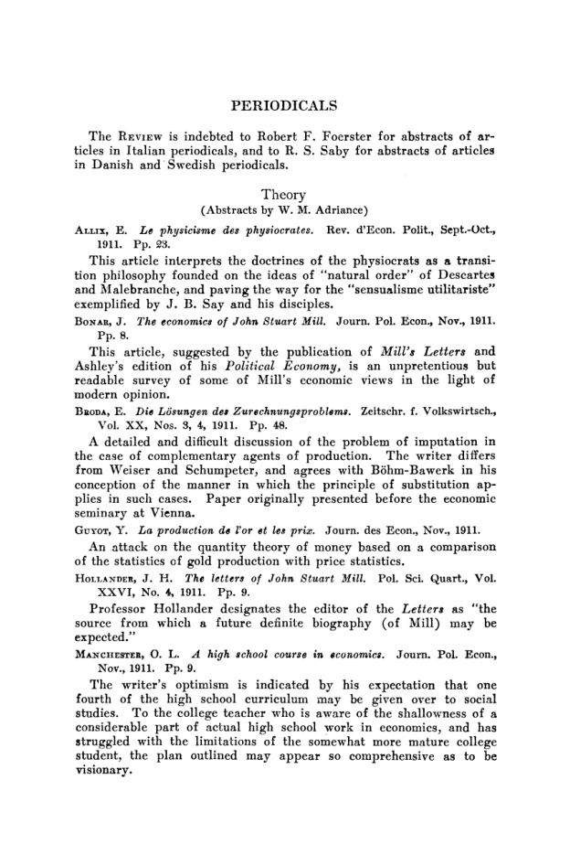

Março de 1912: salário mínimo, notas bancárias e progresso
Leitura: 11 min
Wise relata as primeiras juntas de salários inglesas, Holcombe discute o salário mínimo diante da Constituição americana, Bell explica por que os bancos não emitiam notas e Patten responde a Carver.


Em Cradley Heath, onde a fabricação de correntes está inteiramente concentrada, mulheres trabalham em pequenas oficinas num serviço pesado. Seus ganhos, escreve E. F. Wise, de Toynbee Hall, eram um escândalo público havia uma geração. Foi por esse ofício que a Inglaterra começou a fixar salários por lei: a primeira junta criada pelo Trade Boards Act de 1909 foi a das correntes.
O número de março de 1912 abre o volume II da American Economic Review. O conselho editorial passa a ser formado por Clive Day, E. W. Kemmerer, H. B. Gardner, H. C. Taylor, J. H. Hollander e A. A. Young, com Davis R. Dewey como editor-gerente. São quatro artigos nas primeiras 68 páginas, seguidos de resenhas, listas de livros novos, documentos oficiais, resumos de periódicos e notas.
Os dois primeiros artigos tratam do salário mínimo, um pela experiência inglesa, outro pelas possibilidades americanas. O terceiro examina a emissão de notas pelos bancos nacionais, e o quarto é uma resposta de S. N. Patten a uma resenha de T. N. Carver.
Como a Inglaterra passou a fixar salários por lei?
E. F. Wise (Toynbee Hall, Londres) · “Wage Boards in England” · pp. 1–20
E. F. Wise, de Toynbee Hall, em Londres, descreve os dois primeiros anos do Trade Boards Act de 1909, a lei britânica que passou a fixar salários mínimos nos ofícios de sweating. O termo, explica, deixou de designar apenas a subempreitada no vestuário e passou a valer para ofícios com um ou mais de três males: salários baixos demais, jornadas excessivas e locais de trabalho insalubres, definição adotada por um comitê da Câmara dos Lordes em 1890.
A primeira parte explica por que se chegou à lei. Os sindicatos fracassaram: no vestuário, 5% de sindicalizados até 1909 seria uma estimativa generosa. As ligas de consumidores e as listas de empresas justas também falharam, porque nem o varejista conhece os detalhes de fabricação do que vende. O London County Council fixou uma tabela de preços por peça para os uniformes que encomendava, mas a regra era contornada: o empreiteiro entregava duas peças à costureira, uma pela tabela e outra por muito menos. Uma exposição de 1906, um comitê da Câmara dos Comuns em 1907 e o relatório de Ernest Aves sobre os conselhos de salários da Austrália prepararam o terreno.
A lei criou juntas para quatro ofícios: alfaiataria, caixas de papel, acabamento de rendas e certos tipos de correntes. Cada junta reúne representantes de patrões e de empregados em igual número e membros nomeados pelo Board of Trade, que decidem os impasses. A junta fixa taxas mínimas por hora e pode fixar taxas por peça; durante seis meses a taxa tem operação limitada, e depois o Board of Trade pode torná-la obrigatória.
Wise relata o trabalho de cada junta. A das correntes, em Cradley Heath, decidiu por unanimidade e fixou para os homens de 5 a 7 pence por hora; a de caixas fixou 3 pence por hora, livres de descontos; para a alfaiataria masculina foram propostos 6 pence. Nas caixas e na alfaiataria, patrões e empregados organizados apresentaram propostas opostas, e a decisão coube aos membros nomeados.
O balanço tem seis pontos: a lei estimulou a organização dos dois lados; elevou a média dos salários, sobretudo nivelando por cima taxas muito díspares; não havia sinais de deslocamento do comércio; melhorou a organização dos próprios ofícios; as juntas precisariam de poderes mais amplos; e o efeito sobre o trabalho em domicílio ainda não podia ser julgado. Para Wise, nos dois ofícios mais simples a lei já é um êxito assegurado.
Um salário mínimo legal cabia nos Estados Unidos?
A. N. Holcombe (Harvard University) · “The Legal Minimum Wage in the United States” · pp. 21–37
A. N. Holcombe, de Harvard, examina se um salário mínimo legal seria possível nos Estados Unidos, onde projetos haviam sido apresentados em 1911 nas legislaturas de Minnesota e Wisconsin e uma comissão de Massachusetts estudava os salários de mulheres e menores. Começa por uma distinção. Os conselhos de salários de Victoria, criados pelo Factory and Shops Act de 1896, e as juntas inglesas de 1909 regulam salários em geral, por negociação entre patrões e empregados, e o mínimo varia de ofício para ofício. Outra coisa é um salário mínimo vital, definido pelo custo de um padrão de vida normal. Em Victoria, observa, a proteção do padrão de vida tornou-se incidental; a função principal dos conselhos passou a ser a paz industrial.
O obstáculo americano, segundo Holcombe, é constitucional. Os tribunais leram na décima quarta emenda uma doutrina de liberdade de contrato que o texto não expressa; a expressão aparece pela primeira vez numa decisão de um tribunal da Pensilvânia de 1886. Essa leitura, argumenta, pode ser revista, como fez o tribunal de Illinois no segundo caso Ritchie, ao aceitar uma lei sobre a jornada das mulheres diante das condições reais de emprego. Tudo depende de provar a necessidade da medida.
Como o legislativo não pode delegar poder legislativo, os conselhos de modelo vitoriano estavam fora de alcance: nenhum legislativo estava pronto para definir salários justos em geral. Restava o caminho do projeto de Wisconsin, que definia em lei o mínimo como a remuneração capaz de garantir ao empregado e a seus dependentes o necessário conforto da vida e entregava a aplicação a uma comissão industrial.
Para medir a necessidade, Holcombe adota US$ 600 por ano como padrão de uma família e usa dados da Comissão de Imigração: entre 5.825 famílias de quarteirões congestionados de sete cidades, 72,2% dos chefes ganhavam menos que isso. Os efeitos dependeriam do mercado. Em lojas de departamentos e lavanderias, que servem mercados locais, o aumento poderia ser pago; em fiações de algodão e fábricas de calçados, expostas à concorrência, o mínimo poderia reduzir o emprego. No longo prazo, conclui, salário mínimo e educação industrial teriam de andar juntos.
Por que os bancos não emitiam notas de emergência?
Spurgeon Bell (University of Missouri) · “Profit on National Bank Notes” · pp. 38–60
Spurgeon Bell, da University of Missouri, parte de um enigma. A Lei Aldrich-Vreeland permitia aos bancos emitir notas de emergência sujeitas a um imposto de 5%, 6% ou 7%. A teoria corrente dizia que uma reserva em moeda legal sustenta depósitos de quatro a seis vezes o seu valor; se fosse assim, emitir compensaria mesmo com um imposto de 20% a 30%. Os bancos, porém, não viam o lucro.
“Mas os bancos não parecem ver o lucro. Estão errados os bancos?” (“But the banks do not seem to see the profit. Are the banks wrong?”)
A resposta de Bell é que a teoria confunde o banco individual com o sistema. Quem toma emprestado costuma sacar quase todo o valor e pagar credores que o depositam em outros bancos. É o conjunto dos bancos, pelo redepósito, que multiplica as reservas; o banco que concede o empréstimo perde a maior parte delas. No exemplo do autor, US$ 100 mil depositados no banco A podem sustentar, em noventa dias, empréstimos e depósitos de quatro a oito vezes esse valor, mas espalhados pelos bancos B, C e D. Por isso Bell dá razão ao comissário bancário de Oklahoma, A. M. Young, numa polêmica com W. C. Webster no Journal of Political Economy sobre quanto dos depósitos é criado por empréstimos.
Supondo saques de 75% de cada empréstimo, Bell calcula que US$ 100 mil em notas de emergência sustentariam US$ 133.333 em empréstimos. No primeiro mês, o imposto de 5% consome a maior parte da receita; no início do terceiro, com o imposto crescente, a emissão se torna proibitiva.
Para as notas comuns, garantidas por títulos federais, Bell refaz a conta do Comptroller of the Currency de 1910, que apontava lucro acima de 6% sobre o investimento. O erro principal, diz, está em supor que o preço dos títulos só muda pela amortização; cita Wesley C. Mitchell, para quem esses títulos foram os menos estáveis entre os que tiveram rendimentos calculados. Explica também por que os bancos do interior emitiam proporcionalmente mais que os de Nova York: tinham recursos ociosos e pouca chance de aplicá-los.
A conclusão é um paradoxo. Quando as notas eram necessárias, nenhum banco podia emiti-las, porque a emissão contraía seu próprio poder de emprestar enquanto ampliava o dos bancos centrais do sistema.
O progresso é econômico ou biológico?
S. N. Patten (University of Pennsylvania) · “Theories of Progress” · pp. 61–68
S. N. Patten, da University of Pennsylvania, responde à resenha que T. N. Carver publicara, no número de dezembro de 1911 da revista, de seu livro The Social Basis of Religion. Elogia o tom da resenha e propõe definir a divergência: a sua seria uma interpretação econômica do progresso; a de Carver, uma interpretação biológica. Carver estaria interessado no progresso da raça humana; ele, no ajuste social. Para Patten, a adaptação de um povo às condições presentes é inteiramente econômica e não exige seleção nem evolução biológica.
O argumento central usa um exemplo de renda. Suponha-se que melhorias econômicas elevem a renda anual de cada família, antes de US$ 500. Cada trabalhador pode trabalhar menos e manter o antigo padrão, ou manter o esforço e alcançar um padrão mais alto. No primeiro caso, os padrões sociais declinam; no segundo, sobem. Em ambos, a mudança é social e não biológica: são características adquiridas que se formam ou se perdem. Por isso, diz Patten, a degeneração social é uma ameaça constante numa sociedade que progride, e começa em períodos de prosperidade, não de penúria.
A sequência que ele propõe vai da melhoria econômica a mais atividade industrial, padrão de vida mais alto, mais força de vontade, mais vigor moral e mais entusiasmo religioso. As primeiras etapas são econômicas; as demais, mudanças de pensamento, também adquiridas, que não exigem alteração de características inatas.
Patten rejeita aplicar à sociedade pré-histórica as teorias modernas de superpopulação e rendimentos decrescentes e critica o uso da teoria de Malthus pelos defensores da interpretação biológica. Malthus, escreve, não previu os freios puramente econômicos à população que o avanço industrial do século anterior revelou: a elevação do padrão de vida e a independência econômica da mulher, com sua entrada na indústria.
Sobre a filantropia, observa que a simpatia age de forma intermitente e costuma oferecer apenas meio sustento, que considera socialmente pior que nenhum. Para ele, as reformas profundas dependem do argumento econômico contra a exploração e o meio sustento.
O texto termina com um conselho de ensino. Poucos estudantes conseguem enfrentar problemas não resolvidos; todos podem aprender a ajudar os vizinhos a melhorar de vida. Patten diz ter tentado a vida inteira construir uma nova teoria do valor, sem conseguir, e estende o mesmo conselho às igrejas: em vez de enigmas biológicos, o trabalho útil ao alcance de todos.
O que mais há na edição?
As resenhas ocupam 52 itens, com 17 listas de livros novos. Jacob H. Hollander abre a seção com os dois livros de Georges Weulersse sobre os fisiocratas; F. W. Taussig resenha The Tariff in Our Times, de Ida M. Tarbell; O. M. W. Sprague, dois estudos alemães sobre os bancos franceses; Allyn A. Young, a introdução à teoria estatística de G. Udny Yule. As notas registram 2.446 sócios em 26 de janeiro de 1912, contra 2.200 em 1º de novembro de 1911. Na reunião de Washington, de 27 a 30 de dezembro, a associação votou elevar a anuidade de US$ 3 para US$ 5, a partir de 1913, para não reduzir as publicações.
Na minha leitura
Na minha leitura, os dois primeiros artigos tratam o salário mínimo como questão de desenho institucional, e não de doutrina. Wise mede o êxito da lei inglesa pela capacidade de fixar e fazer cumprir uma taxa por peça; Holcombe separa duas coisas que o debate costuma confundir, a regulação geral de salários por negociação e a garantia de um piso vital, e mostra que cada uma exige uma justificativa e um tipo de prova diferentes.
Bell faz um movimento parecido no campo bancário: separa o que vale para o banco individual do que vale para o sistema. É a mesma disciplina de método aplicada a outro objeto, e explica por que um instrumento que a teoria julgava lucrativo ficava parado na gaveta.
Glossário
- Sweating
- condição de ofícios com salários baixos demais, jornadas excessivas ou trabalho em locais insalubres.
- Trade board
- junta oficial de um ofício, com patrões, empregados e membros nomeados, que fixa salários mínimos.
- Salário mínimo vital
- piso definido pelo custo de um padrão de vida normal, e não pela negociação em cada ofício.
- Liberdade de contrato
- doutrina, lida pelos tribunais americanos na décima quarta emenda, que limitava a regulação de salários e jornadas.
- National bank notes
- papel-moeda emitido pelos bancos nacionais americanos, garantido por títulos federais depositados no Tesouro.
- Lei Aldrich-Vreeland (1908)
- lei posterior ao pânico de 1907 que autorizava notas de emergência, sujeitas a imposto crescente.
- Lawful money
- moeda que a lei admitia como reserva bancária, como ouro e notas do Tesouro.
Artigos (4)
- Wage Boards in England — E. F. Wise (Toynbee Hall, Londres) (pp. 1–20) · resenha acima · JSTOR
- The Legal Minimum Wage in the United States — A. N. Holcombe (Harvard University) (pp. 21–37) · resenha acima · comentário completo · JSTOR
- Profit on National Bank Notes — Spurgeon Bell (University of Missouri) (pp. 38–60) · resenha acima · comentário completo · JSTOR
- Theories of Progress — S. N. Patten (University of Pennsylvania) (pp. 61–68) · resenha acima · JSTOR
Resenhas (52)
- Georges Weulersse, Le Mouvement Physiocratique en France (de 1756 à 1770) e Les Manuscrits Économiques de François Quesnay et du Marquis de Mirabeau aux Archives Nationales — Jacob H. Hollander (pp. 69–70). Estudo em dois volumes sobre o movimento fisiocrático, acompanhado de um inventário dos manuscritos de Quesnay e Mirabeau; o resenhista o trata como notável contribuição à história do pensamento. JSTOR
- Ludwig Pohle, Die gegenwärtige Krisis in der deutschen Volkswirtschaftslehre — Lewis H. Haney (pp. 70–71). Ensaio sobre a crise da economia alemã de então. JSTOR
- Hermann Ritter von Schullern zu Schrattenhofen, Grundzüge der Volkswirtschaftslehre — George Ray Wicker (pp. 72). Manual de teoria e política econômica preparado como texto de estudo. JSTOR
- Members of the Department of Political Economy of the University of Chicago, Outlines of Economics, Developed in a Series of Problems — A. B. W. (pp. 73). Segunda edição, revista e ampliada, de um roteiro de problemas para o ensino de economia. JSTOR
- J. R. Commons e J. B. Andrews (eds.), A Documentary History of American Industrial Society, vols. IX e X: Labor Movement, 1860-1880 — Ernest L. Bogart (pp. 75–77). Volumes documentais sobre o movimento operário americano entre 1860 e 1880. JSTOR
- George French (ed.), New England. What It Is and What It Is To Be — H. S. Person (pp. 78). Volume organizado pela Boston Chamber of Commerce sobre a economia da Nova Inglaterra. JSTOR
- Henry M. Fenner, History of Fall River, Massachusetts — E. L. Bogart (pp. 78–79). História da cidade têxtil, publicada pela associação de comerciantes local. JSTOR
- Albert Anthony Giesecke, American Commercial Legislation before 1789 — Lee Bidgood (pp. 79–80). Estudo da legislação comercial das treze colônias. JSTOR
- Julien Hayem (dir.), Mémoires et Documents pour Servir à l'Histoire du Commerce et de l'Industrie en France — Clive Day (pp. 80–81). Coletânea de documentos sobre a história do comércio e da indústria franceses. JSTOR
- Werner Sombart, Die Juden und das Wirtschaftsleben — Max J. Kohler (pp. 81–84). Resenha do livro de Werner Sombart. JSTOR
- Raymond L. Bridgman, The First Book of World Law — Isaac A. Loos (pp. 84–85). Compilação das convenções internacionais firmadas pelas principais nações, com exame de seu alcance. JSTOR
- B. Lincke, Die schweizerische Maschinenindustrie und ihre Entwicklung in wirtschaftlicher Beziehung — Abraham Berglund (pp. 85–86). Estudo do desenvolvimento econômico da indústria suíça de máquinas. JSTOR
- Hermann Levy, Large and Small Holdings. A Study of English Agricultural Economics — H. C. Taylor (pp. 89–91). Estudo da economia agrícola inglesa sobre grandes e pequenas propriedades, traduzido por Ruth Kenyon. JSTOR
- H. Rider Haggard, Rural Denmark and its Lessons — T. N. Carver (pp. 91–93). Exame da agricultura dinamarquesa e do que ela poderia ensinar. JSTOR
- K. von Rümker e E. von Tschermak, Landwirtschaftliche Studien in Nordamerika — Alexander E. Cance (pp. 93–94). Relatório de três meses de estudo de instituições agrícolas e estações experimentais americanas. JSTOR
- Samuel Jodidi, The Sugar Beet and Beet Sugar — E. V. R. (pp. 94). Opúsculo sobre a beterraba e o açúcar de beterraba. JSTOR
- M. B. Hammond, Railway Rate Theories of the Interstate Commerce Commission — H. S. Smalley (pp. 97–98). Análise das teorias de tarifas ferroviárias adotadas pela Interstate Commerce Commission. JSTOR
- Henry S. Haines, Problems in Railway Regulation — Lewis H. Haney (pp. 98–99). Tentativa de analisar as tendências da regulação ferroviária nos Estados Unidos. JSTOR
- Luigi Fontana-Russo, Grundzüge der Handelspolitik — Simon Litman (pp. 100–101). Tratado de política comercial, em tradução alemã. JSTOR
- Josef Hellauer, System der Welthandelslehre, vol. I, parte 1 — Frank R. Rutter (pp. 101–102). Primeiro volume de um manual sobre o comércio internacional em geral. JSTOR
- Harry C. Bentley, The Science of Accounts — John Bauer (pp. 104–105). Obra sobre os defeitos comuns no ensino e na prática da escrituração. JSTOR
- Louis Guenther, Investments and Speculation — William T. Jackman (pp. 106–108). Volume de uma série sobre administração de negócios da La Salle Extension University. JSTOR
- Francis W. Hirst, The Stock Exchange. A Short Study of Investment and Speculation — S. S. Huebner (pp. 108–109). Estudo breve da bolsa, escrito pelo editor de The Economist. JSTOR
- Charles Buxton Going, Principles of Industrial Engineering — Edward D. Jones (pp. 109–110). Lições sobre engenharia industrial do editor da Engineering Magazine. JSTOR
- Daniel S. Remsen e outros, The Post-Mortem Use of Wealth — Isaac A. Loos (pp. 110–111). Guia sobre testamentos e doações em vida. JSTOR
- James V. Oxtoby, Legal Phases of Central Station Rate Making for Electric Supply — J. M. Clark (pp. 113–114). Aspectos jurídicos da fixação de tarifas das centrais elétricas. JSTOR
- Scott Nearing, Wages in the United States, 1908-1910. A Study of State and Federal Wage Statistics — Warren M. Persons (pp. 115–119). Estudo das estatísticas estaduais e federais de salários. JSTOR
- William Morris Leiserson, Unemployment in the State of New York — Robert F. Foerster (pp. 119–120). Estudo feito para uma comissão pública; o resenhista o considera bem-vindo pela pouca informação sobre desemprego no país. JSTOR
- A. Slosse e E. Waxweiler, Enquête sur le Régime Alimentaire de 1065 Ouvriers Belges — Julius H. Parmelee (pp. 120–122). Inquérito dos Instituts Solvay sobre a alimentação de operários belgas. JSTOR
- Professor Maschke, Boykott, Sperre und Aussperrung — Isaac A. Loos (pp. 123). Estudo jurídico-social de boicote, greve e locaute. JSTOR
- Agnes F. Dodd, History of Money in the British Empire and the United States — G. D. Hancock (pp. 125–126). História monetária do Império Britânico e dos Estados Unidos. JSTOR
- Eugen Kaufmann, Das französische Bankwesen, e Bernhard Mehrens, Die Entstehung und Entwicklung der grossen französischen Kreditinstitute — O. M. W. Sprague (pp. 126–129). Dois estudos alemães sobre os grandes bancos de depósito franceses. JSTOR
- W. R. Bisschop, The Rise of the London Money Market, 1640-1826 — Wm. A. Scott (pp. 129–130). História da formação do mercado monetário de Londres, com prefácio de H. S. Foxwell. JSTOR
- Ida M. Tarbell, The Tariff in Our Times — F. W. Taussig (pp. 132–134). História da política tarifária americana recente. JSTOR
- Henry Atton e Henry Hurst Holland, The King's Customs, segundo volume — Clive Day (pp. 134–136). História da alfândega britânica, da introdução do livre-comércio e da abolição das leis de navegação e dos cereais, de 1801 a 1855. JSTOR
- Paul Beusch, Allgemeine Steuerlehre e Steuerarten und Steuersysteme; J. Steiger e Karl Satzinger, estudos sobre tributação — Carl C. Plehn (pp. 136–138). Resenha conjunta de quatro opúsculos sobre teoria e sistemas tributários. JSTOR
- J. J. Berckum, Das Staatsschuldenproblem im Lichte der klassischen Nationalökonomie — E. T. Miller (pp. 138–139). A dívida pública vista pelos economistas clássicos. JSTOR
- L. Schönberg, Die Technik des Finanzhaushalts der deutschen Städte im Mittelalter — Donald F. Grass (pp. 139–141). As finanças das cidades alemãs na Idade Média. JSTOR
- H. Weissenborn, Die Besteuerung nach dem Wertzuwachs — William Walker Swanson (pp. 141–142). Estudo do imposto direto sobre a valorização imobiliária. JSTOR
- Edward Ewing Pratt, Industrial Causes of Congestion in New York City — Kate Holladay Claghorn (pp. 145–146). Estudo das causas industriais do adensamento populacional em Nova York. JSTOR
- C. Hanford Henderson, Pay-Day — Edward T. Devine (pp. 147–149). Livro sobre problemas sociais e reformas. JSTOR
- Eugen Jaeger, Grundriss der Wohnungsfrage und Wohnungspolitik — James Ford (pp. 149–151). Esboço da questão habitacional e da política de habitação. JSTOR
- K. von Mangoldt (ed.), Jahrbuch der Wohnungsreform, 1908-1910 — E. E. Pratt (pp. 151–152). Anuário da associação alemã de reforma habitacional. JSTOR
- W. F. Gephart, Principles of Insurance — John Bauer (pp. 153–155). Manual de princípios de seguros. JSTOR
- J. Lefort, L'Assurance contre les Grèves — Arthur J. Boynton (pp. 155–157). Estudo do seguro contra greves. JSTOR
- I. G. Gibbon, Unemployment Insurance. A Study of Schemes of Assisted Insurance — George E. Barnett (pp. 157–158). Estudo dos esquemas de seguro-desemprego subsidiado, com prefácio de L. T. Hobhouse. JSTOR
- Zur Frage der Arbeitslosenversicherung, der Arbeitsvermittelung und der Arbeitsbeschaffung — Raymond V. Phelan (pp. 158–159). Estudo alemão sobre seguro-desemprego, colocação de mão de obra e criação de trabalho. JSTOR
- Oscar D. Skelton, Socialism: A Critical Analysis — John Spargo (pp. 162–164). Ensaio premiado na série Hart Schaffner and Marx; Skelton, por sua vez, resenha outros livros neste número. JSTOR
- E. Silbering, Dictionnaire de Sociologie Phalanstérienne, e outros títulos sobre socialismo — O. D. Skelton (pp. 165–168). Resenha conjunta, que inclui livros de A. Alhaiza sobre Fourier, de George Brandes sobre Lassalle e de John Spargo. JSTOR
- Marcel Braibant, Le Socialisme et l'Activité Économique — Jessica B. Peixotto (pp. 168–170). Estudo dos motivos da atividade econômica individual nas concepções socialistas. JSTOR
- Alexandre Zévaès, Le Syndicalisme Contemporain, e Anton Acht, Der moderne französische Syndikalismus — John Graham Brooks (pp. 170–172). Dois livros sobre o sindicalismo francês. JSTOR
- G. Udny Yule, An Introduction to the Theory of Statistics — Allyn A. Young (pp. 174–176). Manual de teoria estatística. JSTOR
Novos livros (17)
- New Books (teoria e sua história) — redação (pp. 73–75). Lista de lançamentos sobre teoria e sua história, alguns com nota curta. JSTOR
- New Books (história econômica e geografia) — redação (pp. 86–89). Lista de lançamentos sobre história econômica e geografia, alguns com nota curta. JSTOR
- New Books (agricultura, mineração, florestas e pesca) — redação (pp. 94–96). Lista de lançamentos sobre agricultura, mineração, florestas e pesca, alguns com nota curta. JSTOR
- New Books (indústrias manufatureiras) — redação (pp. 96–97). Lista de lançamentos sobre indústrias manufatureiras, alguns com nota curta. JSTOR
- New Books (transportes e comunicações) — redação (pp. 99–100). Lista de lançamentos sobre transportes e comunicações, alguns com nota curta. JSTOR
- New Books (comércio e crises comerciais) — redação (pp. 103). Lista de lançamentos sobre comércio e crises comerciais, alguns com nota curta. JSTOR
- New Books (contabilidade, métodos de negócios e investimentos) — redação (pp. 111–113). Lista de lançamentos sobre contabilidade, métodos de negócios e investimentos, alguns com nota curta. JSTOR
- New Books (capital e organização capitalista) — redação (pp. 114–115). Lista de lançamentos sobre capital e organização capitalista, alguns com nota curta. JSTOR
- New Books (trabalho e organizações trabalhistas) — redação (pp. 123–125). Lista de lançamentos sobre trabalho e organizações trabalhistas, alguns com nota curta. JSTOR
- New Books (moeda, preços, crédito e bancos) — redação (pp. 131–132). Lista de lançamentos sobre moeda, preços, crédito e bancos, alguns com nota curta. JSTOR
- New Books (finanças públicas, tributação e tarifa) — redação (pp. 142–145). Lista de lançamentos sobre finanças públicas, tributação e tarifa, alguns com nota curta. JSTOR
- New Books — redação (pp. 147). Lista de lançamentos, alguns com nota curta. JSTOR
- New Books (problemas sociais e reformas) — redação (pp. 152–153). Lista de lançamentos sobre problemas sociais e reformas, alguns com nota curta. JSTOR
- New Books (seguros e pensões) — redação (pp. 159–161). Lista de lançamentos sobre seguros e pensões, alguns com nota curta. JSTOR
- New Books (pauperismo e caridade) — redação (pp. 161–162). Lista de lançamentos sobre pauperismo e caridade, alguns com nota curta. JSTOR
- New Books (socialismo e cooperativas) — redação (pp. 172–174). Lista de lançamentos sobre socialismo e cooperativas, alguns com nota curta. JSTOR
- New Books (estatística) — redação (pp. 176–177). Lista de lançamentos sobre estatística, alguns com nota curta. JSTOR
Documentos, periódicos e notas (3)
- Documents, Reports and Legislation — redação (pp. 178–201). Resumos de publicações oficiais, relatórios e leis, por área. JSTOR
- Periodicals — redação e colaboradores (pp. 202–242). Resumos de artigos de periódicos americanos e estrangeiros, por área; Robert F. Foerster resume os italianos. JSTOR
- Notes — redação (pp. 243–255). Folha de rosto e sumário do volume I, 2.446 sócios em 26 de janeiro de 1912, aumento da anuidade de US$ 3 para US$ 5 a partir de 1913, proposta de Irving Fisher de uma comissão internacional sobre o custo de vida, congressos, prêmios e nomeações. JSTOR
Fontes
- Wage Boards in England (pp. 1–20). JSTOR · Internet Archive (PDF)
- The Legal Minimum Wage in the United States (pp. 21–37). JSTOR · Internet Archive (PDF)
- Profit on National Bank Notes (pp. 38–60). JSTOR · Internet Archive (PDF)
- Theories of Progress (pp. 61–68). JSTOR · Internet Archive (PDF)
- [untitled] The American Economic Review, (1912-03-01), pages 69-70 (pp. 69–70). JSTOR · Internet Archive (PDF)
- [untitled] The American Economic Review, (1912-03-01), pages 70-71 (pp. 70–71). JSTOR · Internet Archive (PDF)
- [untitled] The American Economic Review (1912-03-01), page 72 (pp. 72). JSTOR · Internet Archive (PDF)
- [untitled] The American Economic Review (1912-03-01), page 73 (pp. 73). JSTOR · Internet Archive (PDF)
- New Books (pp. 73–75). JSTOR · Internet Archive (PDF)
- [untitled] The American Economic Review, (1912-03-01), pages 75-77 (pp. 75–77). JSTOR · Internet Archive (PDF)
- [untitled] The American Economic Review (1912-03-01), page 78 (pp. 78). JSTOR · Internet Archive (PDF)
- [untitled] The American Economic Review, (1912-03-01), pages 78-79 (pp. 78–79). JSTOR · Internet Archive (PDF)
- [untitled] The American Economic Review, (1912-03-01), pages 79-80 (pp. 79–80). JSTOR · Internet Archive (PDF)
- [untitled] The American Economic Review, (1912-03-01), pages 80-81 (pp. 80–81). JSTOR · Internet Archive (PDF)
- [untitled] The American Economic Review, (1912-03-01), pages 81-84 (pp. 81–84). JSTOR · Internet Archive (PDF)
- [untitled] The American Economic Review, (1912-03-01), pages 84-85 (pp. 84–85). JSTOR · Internet Archive (PDF)
- [untitled] The American Economic Review, (1912-03-01), pages 85-86 (pp. 85–86). JSTOR · Internet Archive (PDF)
- New Books (pp. 86–89). JSTOR · Internet Archive (PDF)
- [untitled] The American Economic Review, (1912-03-01), pages 89-91 (pp. 89–91). JSTOR · Internet Archive (PDF)
- [untitled] The American Economic Review, (1912-03-01), pages 91-93 (pp. 91–93). JSTOR · Internet Archive (PDF)
- [untitled] The American Economic Review, (1912-03-01), pages 93-94 (pp. 93–94). JSTOR · Internet Archive (PDF)
- [untitled] The American Economic Review (1912-03-01), page 94 (pp. 94). JSTOR · Internet Archive (PDF)
- New Books (pp. 94–96). JSTOR · Internet Archive (PDF)
- New Books (pp. 96–97). JSTOR · Internet Archive (PDF)
- [untitled] The American Economic Review, (1912-03-01), pages 97-98 (pp. 97–98). JSTOR · Internet Archive (PDF)
- [untitled] The American Economic Review, (1912-03-01), pages 98-99 (pp. 98–99). JSTOR · Internet Archive (PDF)
- New Books (pp. 99–100). JSTOR · Internet Archive (PDF)
- [untitled] The American Economic Review, (1912-03-01), pages 100-101 (pp. 100–101). JSTOR · Internet Archive (PDF)
- [untitled] The American Economic Review, (1912-03-01), pages 101-102 (pp. 101–102). JSTOR · Internet Archive (PDF)
- New Books (pp. 103). JSTOR · Internet Archive (PDF)
- [untitled] The American Economic Review, (1912-03-01), pages 104-105 (pp. 104–105). JSTOR · Internet Archive (PDF)
- [untitled] The American Economic Review, (1912-03-01), pages 106-108 (pp. 106–108). JSTOR · Internet Archive (PDF)
- [untitled] The American Economic Review, (1912-03-01), pages 108-109 (pp. 108–109). JSTOR · Internet Archive (PDF)
- [untitled] The American Economic Review, (1912-03-01), pages 109-110 (pp. 109–110). JSTOR · Internet Archive (PDF)
- [untitled] The American Economic Review, (1912-03-01), pages 110-111 (pp. 110–111). JSTOR · Internet Archive (PDF)
- New Books (pp. 111–113). JSTOR · Internet Archive (PDF)
- [untitled] The American Economic Review, (1912-03-01), pages 113-114 (pp. 113–114). JSTOR · Internet Archive (PDF)
- New Books (pp. 114–115). JSTOR · Internet Archive (PDF)
- [untitled] The American Economic Review, (1912-03-01), pages 115-119 (pp. 115–119). JSTOR · Internet Archive (PDF)
- [untitled] The American Economic Review, (1912-03-01), pages 119-120 (pp. 119–120). JSTOR · Internet Archive (PDF)
- [untitled] The American Economic Review, (1912-03-01), pages 120-122 (pp. 120–122). JSTOR · Internet Archive (PDF)
- [untitled] The American Economic Review (1912-03-01), page 123 (pp. 123). JSTOR · Internet Archive (PDF)
- New Books (pp. 123–125). JSTOR · Internet Archive (PDF)
- [untitled] The American Economic Review, (1912-03-01), pages 125-126 (pp. 125–126). JSTOR · Internet Archive (PDF)
- [untitled] The American Economic Review, (1912-03-01), pages 126-129 (pp. 126–129). JSTOR · Internet Archive (PDF)
- [untitled] The American Economic Review, (1912-03-01), pages 129-130 (pp. 129–130). JSTOR · Internet Archive (PDF)
- New Books (pp. 131–132). JSTOR · Internet Archive (PDF)
- [untitled] The American Economic Review, (1912-03-01), pages 132-134 (pp. 132–134). JSTOR · Internet Archive (PDF)
- [untitled] The American Economic Review, (1912-03-01), pages 134-136 (pp. 134–136). JSTOR · Internet Archive (PDF)
- [untitled] The American Economic Review, (1912-03-01), pages 136-138 (pp. 136–138). JSTOR · Internet Archive (PDF)
- [untitled] The American Economic Review, (1912-03-01), pages 138-139 (pp. 138–139). JSTOR · Internet Archive (PDF)
- [untitled] The American Economic Review, (1912-03-01), pages 139-141 (pp. 139–141). JSTOR · Internet Archive (PDF)
- [untitled] The American Economic Review, (1912-03-01), pages 141-142 (pp. 141–142). JSTOR · Internet Archive (PDF)
- New Books (pp. 142–145). JSTOR · Internet Archive (PDF)
- [untitled] The American Economic Review, (1912-03-01), pages 145-146 (pp. 145–146). JSTOR · Internet Archive (PDF)
- New Books (pp. 147). JSTOR · Internet Archive (PDF)
- [untitled] The American Economic Review, (1912-03-01), pages 147-149 (pp. 147–149). JSTOR · Internet Archive (PDF)
- [untitled] The American Economic Review, (1912-03-01), pages 149-151 (pp. 149–151). JSTOR · Internet Archive (PDF)
- [untitled] The American Economic Review, (1912-03-01), pages 151-152 (pp. 151–152). JSTOR · Internet Archive (PDF)
- New Books (pp. 152–153). JSTOR · Internet Archive (PDF)
- [untitled] The American Economic Review, (1912-03-01), pages 153-155 (pp. 153–155). JSTOR · Internet Archive (PDF)
- [untitled] The American Economic Review, (1912-03-01), pages 155-157 (pp. 155–157). JSTOR · Internet Archive (PDF)
- [untitled] The American Economic Review, (1912-03-01), pages 157-158 (pp. 157–158). JSTOR · Internet Archive (PDF)
- [untitled] The American Economic Review, (1912-03-01), pages 158-159 (pp. 158–159). JSTOR · Internet Archive (PDF)
- New Books (pp. 159–161). JSTOR · Internet Archive (PDF)
- New Books (pp. 161–162). JSTOR · Internet Archive (PDF)
- [untitled] The American Economic Review, (1912-03-01), pages 162-164 (pp. 162–164). JSTOR · Internet Archive (PDF)
- [untitled] The American Economic Review, (1912-03-01), pages 165-168 (pp. 165–168). JSTOR · Internet Archive (PDF)
- [untitled] The American Economic Review, (1912-03-01), pages 168-170 (pp. 168–170). JSTOR · Internet Archive (PDF)
- [untitled] The American Economic Review, (1912-03-01), pages 170-172 (pp. 170–172). JSTOR · Internet Archive (PDF)
- New Books (pp. 172–174). JSTOR · Internet Archive (PDF)
- [untitled] The American Economic Review, (1912-03-01), pages 174-176 (pp. 174–176). JSTOR · Internet Archive (PDF)
- New Books (pp. 176–177). JSTOR · Internet Archive (PDF)
- Documents, Reports and Legislation (pp. 178–201). JSTOR · Internet Archive (PDF)
- Periodicals (pp. 202–242). JSTOR · Internet Archive (PDF)
- Notes (pp. 243–255). JSTOR · Internet Archive (PDF)
- Sumário da edição no JSTOR: The American Economic Review, vol. 2, nº 1.
Documento em domínio público (EUA, publicado antes de 1931), via JSTOR Early Journal Content e Internet Archive. Resumo e comentário do autor deste site, sem afiliação com a American Economic Association. Encontrou um erro? Escreva: a correção é publicada no próprio texto, com data.
← Nº 116 · Dezembro de 1911: o imposto sobre as sociedades e o que é custo Nº 118 · Washington, 1911: tarifa medida, orçamento federal e a história como teste →